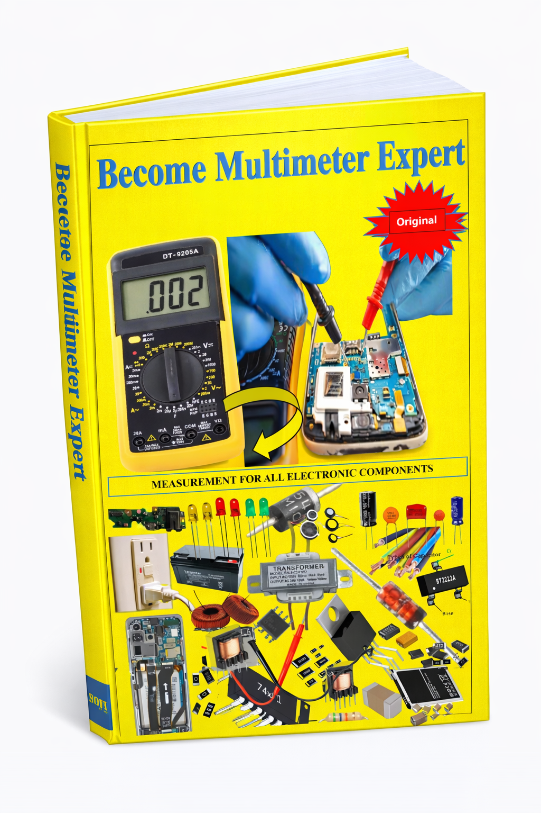

Electronic Component Names
Learn the names of electronic components commonly encountered by technicians and understand why component identification is important before testing.
Become Multimeter Expert is a practical electronics technician book created to help technicians understand how to use a multimeter for testing electronic components and diagnosing problems in different types of electronic devices.
The book focuses on practical measurement, component identification, understanding multimeter readings and using those readings during electronics troubleshooting.

Learn how measurement becomes one of the most important tools in electronics repair.
Become Multimeter Expert is an online technical book designed for technicians who want to become more confident and skilled in using a multimeter. A multimeter is one of the most important instruments used in electronics repair because it allows a technician to investigate electrical conditions instead of depending only on visual inspection.
For a technician, knowing how to use a multimeter correctly can make troubleshooting more systematic. When an electronic device is not working, the technician needs to identify possible causes, measure relevant components or circuit points, understand the readings and compare those readings with what is expected from the circuit.
This book is focused on developing that practical measurement knowledge. It explains electronic components, their names, their representations in electronic diagrams and the ways technicians can approach their measurement. The goal is not simply to teach a person how to hold a multimeter, but to help the technician understand what the measurement means.
This online book is essential for every technician in any country. Our goal is to make every technician an expert in using a multimeter.
The book contains the names of electronic components, especially those needed by technicians, including many pictures showing the components and their electronic diagram representations.
Understanding component names and symbols is important because technicians regularly work with components that may appear differently depending on the device, circuit board or technical diagram. A technician who can identify a component and understand its purpose is in a much better position to perform useful measurements.
The book therefore combines component identification with practical measurement knowledge. It is intended to help technicians understand what they are measuring, why they are measuring it and what a particular measurement may indicate about the condition of the device.
The book is intended for technicians working with several categories of electronic equipment.
1. Mobile phone devices: Mobile phone repair technicians can use multimeter knowledge when investigating circuit conditions, components, connections and possible short-circuit problems on phone boards.
2. Television devices: Television repair involves many electronic components and circuits. Understanding how to measure components gives technicians a practical foundation for investigating faults.
3. Smart phone devices: Modern smartphones contain complex electronic circuits. Measurement skills can help a technician approach board-level troubleshooting in a more organized way.
4. Radio devices: Radios contain electronic components and circuits that can be investigated using appropriate measurement techniques.
5. Speaker devices: Speaker and audio equipment technicians can benefit from understanding electrical measurements and component testing.
6. Amplifier devices: Amplifier circuits contain multiple electronic components that require proper testing and troubleshooting knowledge.
The book also covers other electronic equipment and technician applications. The purpose is to develop transferable measurement skills that can be useful in different areas of electronics repair.
The focus is on understanding measurements and applying them during practical electronics work.
Learn the names of electronic components commonly encountered by technicians and understand why component identification is important before testing.
Become familiar with component representations found in electronic diagrams so that you can connect circuit information with physical components.
Learn how multimeter measurements are used to investigate electronic components and electrical conditions during troubleshooting.
Understand measurements that may indicate a component is behaving normally, while also considering the circuit in which the component is being measured.
Learn how technicians use measurements as evidence when investigating components that may be damaged, open, shorted or otherwise abnormal.
Develop a more systematic approach to troubleshooting instead of replacing components without first investigating the fault.
One of the central purposes of a multimeter is to provide measurable information about an electrical circuit. Technicians can use appropriate measurement modes to investigate resistance, continuity, voltage and other electrical characteristics depending on the component and circuit being tested.
Become Multimeter Expert introduces the technician to the importance of identifying the component before deciding how it should be measured. Different components behave differently, and the circuit around a component can also affect the measurement.
This is especially important when testing components directly on a circuit board. A reading obtained on a board may be influenced by other components connected to the same circuit. For that reason, technicians need to understand the device and circuit context rather than interpreting every multimeter reading in isolation.
The book helps develop this type of practical thinking by connecting component names, circuit diagrams, measurements and fault diagnosis.
A technician needs to know more than the number shown on a multimeter display. The important question is what that number means for the component and the circuit being tested.
You will learn about what can indicate a good component, what can indicate a dead or defective component, and why the expected result can depend on the device and circuit where the measurement is being performed.
This approach is particularly useful for technicians who want to move from basic electronics testing into more advanced repair and troubleshooting.
Knowing how to investigate short-circuit conditions is an important skill for electronics and mobile phone technicians. The book introduces the concepts of full short circuits and half shorts and explains their importance in technician troubleshooting.
Understanding these conditions can help technicians approach a phone or electronic circuit systematically instead of relying only on guesswork.
Electronics technicians work with devices that can contain hundreds or thousands of electrical connections and components. When a device stops working, simply looking at the circuit board may not reveal the actual problem. This is where measurement becomes an essential part of professional troubleshooting.
A multimeter allows a technician to collect electrical information from a circuit. By learning how to use the instrument properly, a technician can investigate possible faults and make better decisions about what should be tested next.
Become Multimeter Expert is designed around this practical idea. The book helps technicians understand that multimeter testing is not simply about touching probes to a component. Good testing requires knowledge of the component, the circuit, the expected behavior and the meaning of the result.
This is especially valuable in mobile phone repair, smartphone repair, television repair, radio repair, speaker repair and amplifier repair. Each category of device can contain different circuits and components, but the fundamental skill of careful measurement remains important.
For students and new technicians, learning how to measure components can provide a strong foundation for electronics repair. For experienced technicians, organized measurement techniques can help improve troubleshooting and reduce unnecessary component replacement.
This online book is intended for technicians in any country. Electronics repair is a practical skill that is useful across many markets and technical environments. A technician working on mobile phones, televisions, radios or other electronic equipment can benefit from understanding electrical measurement.
The goal is to make multimeter knowledge easier to understand and apply. Instead of treating the multimeter as a simple measuring instrument, the book presents it as an important diagnostic tool for the technician.
Although mobile phone and smartphone technicians can benefit significantly from the book, the knowledge is not limited to phone repair. The principles of electronic component identification and measurement can also be useful to people working with electrical and electronic systems, including learners interested in electricity and solar power.
For this reason, the book can be useful to beginners, electronics students, mobile phone repair technicians, television technicians, radio technicians, audio technicians, amplifier technicians and other people developing practical electronics skills.
The book can be useful to anyone who wants to understand practical multimeter measurement.
The objective is to help you understand the relationship between a multimeter reading, an electronic component and the device being tested.
Identify electronic components used by technicians.
Recognize component names and electronic diagram representations.
Understand practical multimeter measurement.
Understand what measurements may indicate about component condition.
Investigate possible defective components.
Understand full short-circuit conditions.
Understand half-short conditions in phone troubleshooting.
Apply measurement knowledge to different electronic devices.
You will learn a lot about how to measure electronic components, their names, what indicates a dead one, what indicates a good one and even what they depend on in the device you are measuring.
Knowing how to measure a full short circuit (short circuit) and half short in any phone is an important part of practical technician knowledge. The contents of this book bring together courses covering many aspects of technician work and are intended to help readers develop a stronger understanding of multimeter-based troubleshooting.
Even those who are working with or learning about electricity or solar power can benefit from learning practical electrical measurement concepts.
The purpose of Become Multimeter Expert is to give technicians a useful technical reference for understanding components, measurements and troubleshooting. It is especially relevant to technicians who want to improve their practical electronics repair skills.
Start learning practical multimeter skills for electronics measurement, component testing, mobile phone troubleshooting, short-circuit diagnosis and other technician applications.
📘 Get the Book